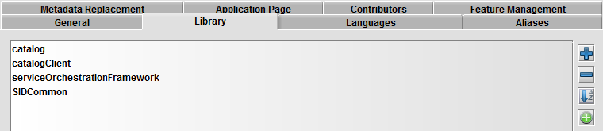

Add module-specific library files
The module-specific library files contains the metadata that enables the module application to run and is located in the following JAR files that are included in the modules folder of the installation disk.
These files must be added to Velocity Studio's library. The following are the steps to add catalog specific library files:
- Open the Velocity Studio and click File > Open Project from the menu bar.
- Click the metadata root node and in the right pane, click the Library tab, and then click the Add button.

- Add the modules JAR files, which are located in the <product_installation_folder>\modules.
For Catalog, the following JAR files are added:
- catalog.jar
- catalogClient.jar
- SIDCommon.jar
- serviceOrchestrationFramework.jar
- Once the files are added, Save the project metadata, and then reload or open the project for the library files to take effect.
Once all the library files have been successfully added, the templates folder of your project contains the appropriate files.
|